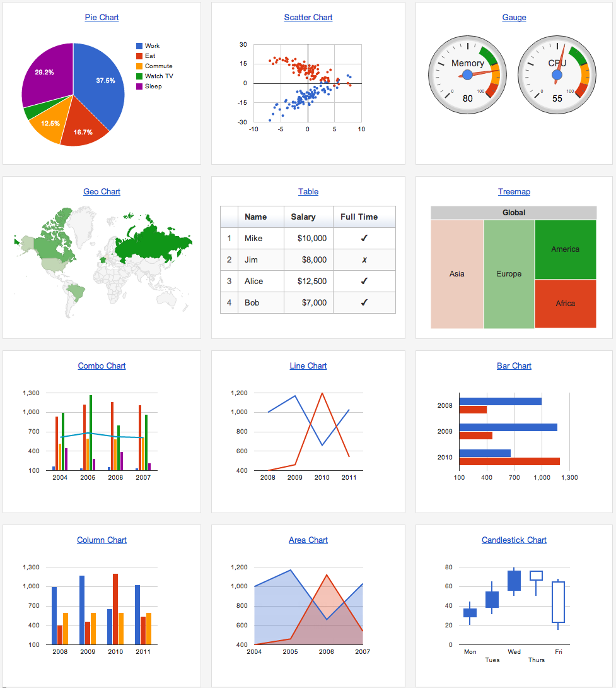
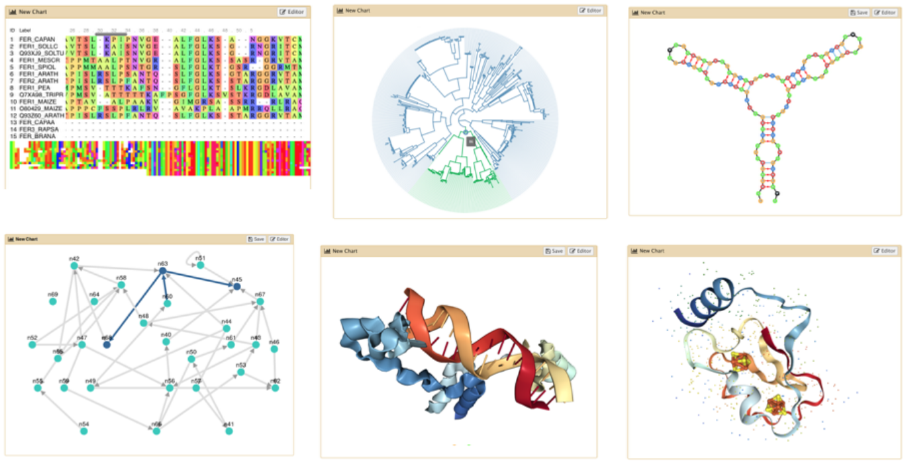
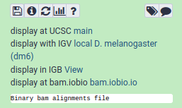
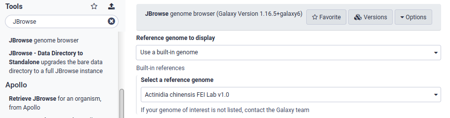
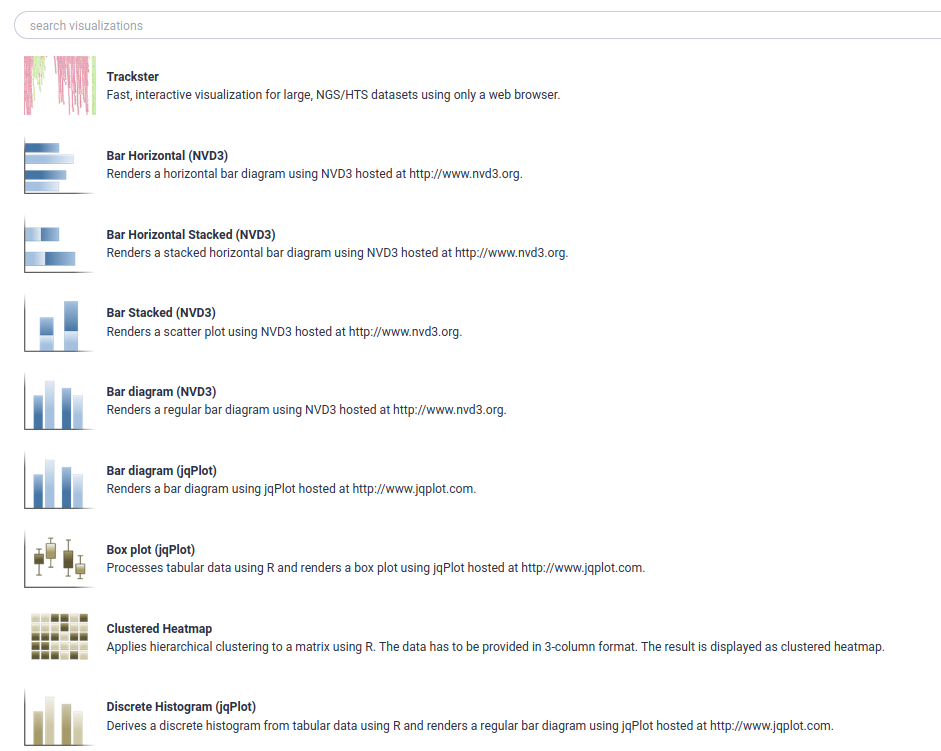
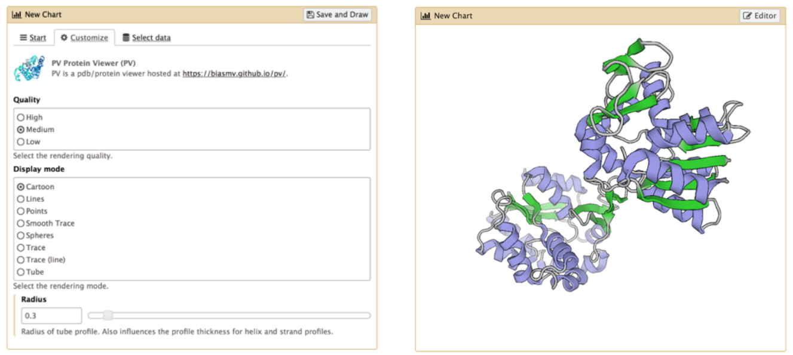

Visualisations in Galaxy
Contributors
Authors: 
 Helena Rasche
Helena Rasche Saskia Hiltemann
Saskia Hiltemann
last_modification Published: Feb 7, 2024
last_modification Last Updated: Feb 7, 2024
What is Data Visualisation
- Making graphics to clearly convey data
- Many different options

What is Data Visualisation
- More than just scatter plots and bar charts
- Many domain-specific
- Protein folding, network graphs, trees, genome browsers

Why visualizations?
.pull-left[
-
“A picture is worth 1000 words”
-
Anscombe’s Quartet
-
All these datasets share the same basic statistics:
X mean: 54.26, X SD: 16.76 Y mean: 47.83, Y SD: 26.93 Correlation: -0.06 -
But visualisation reveals vastly different underlying structures! ] .pull-right[ .image-90[
 ]
]
]
]
Speaker Notes Anscombes quartet, all these datasets have same mean, standard deviation and correlation, yet when visualizing them it is revealed they have vastly different structures.
Data Visualisation in Galaxy
Genome Browsers
- Visualize the genome
- mapped sequence reads, variants, genes, ..

Genome Browsers in Galaxy
- As display applications
- e.g. UCSC browser, IBV, IGB, ..
-
accessed via links on dataset

JBrowse
- Genome browser as a regular tool
- Configure your settings
.image-75[  ]
Speaker Notes
- JBrowse is not a display application like the previous examples
- Regular Galaxy tool
JBrowse
- Then interactively explore your genome
.image-75[]
Galaxy Charts
- Accessed through Charts icon galaxy-barchart on dataset
- Different options depending on datatype

Galaxy Charts
- After selecting chart type, can customize settings
-
Example: Protein Viewer

Visualisation Tools
- Many tools for visualisation
- Example: Circos for circular data plots

Key Points
- Visualizations are vital for the interpretation of large datasets
- Galaxy has numerous visualization options available
Thank you!
This material is the result of a collaborative work. Thanks to the Galaxy Training Network and all the contributors! Tutorial Content is licensed under
Creative Commons Attribution 4.0 International License.
Tutorial Content is licensed under
Creative Commons Attribution 4.0 International License.